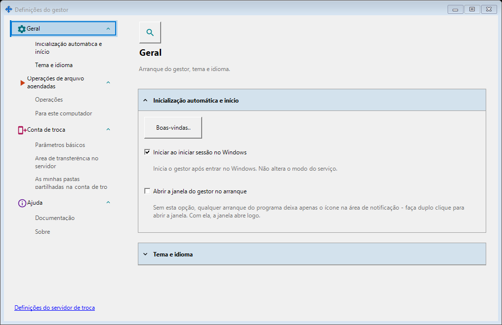
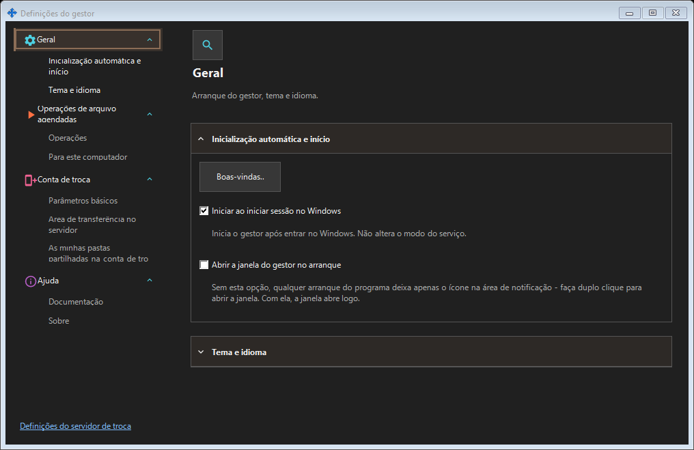
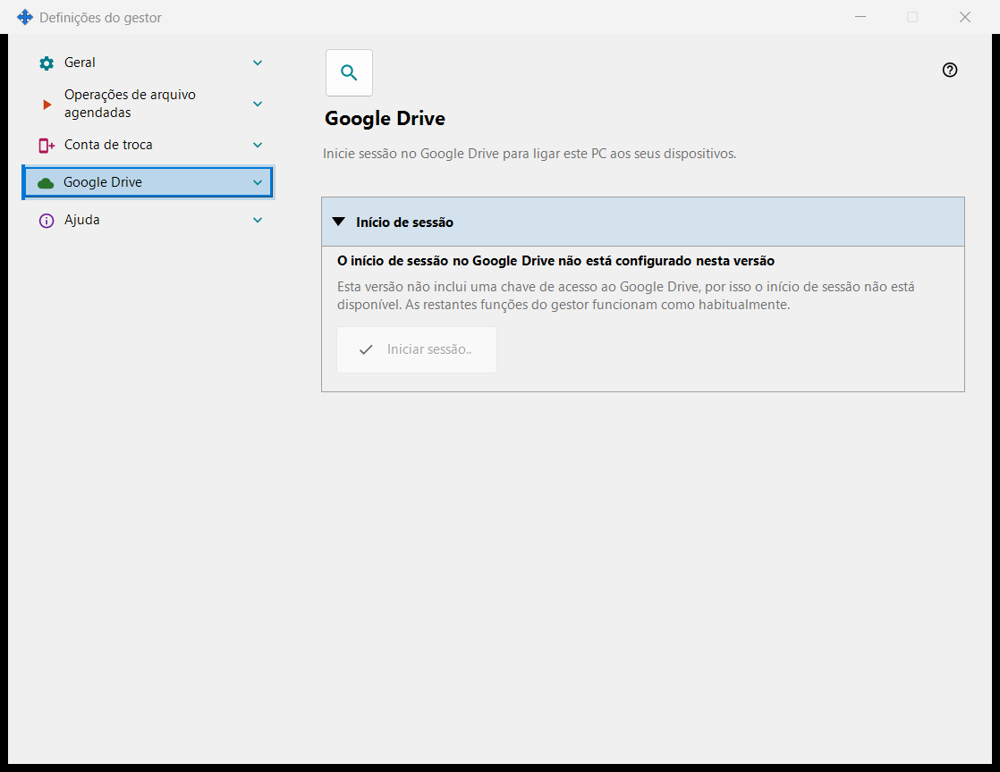
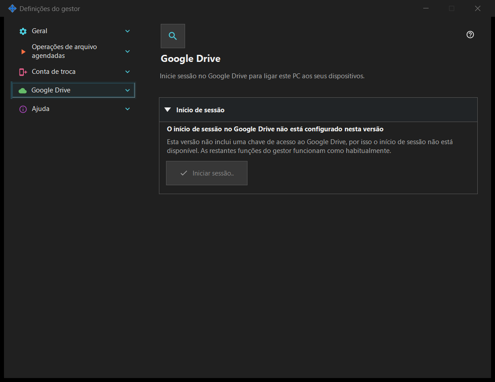

Configurações do gerenciador
Configurações do gerenciador
Finalidade
Inicialização, tema, idioma, conta remota, publicação, área de transferência e operações agendadas pertencem ao gerenciador e não exigem servidor local. Se o componente de compartilhamento SFTP estiver instalado, as suas páginas formam um grupo nesta janela.


Nesta ordem
Abra pela área de notificação ou pelas conexões dos componentes. Abrir e fechar não inicia nem para servidores. O acesso remoto não exige servidor local.
Os elementos
Configurações do gerenciador
Inicialização, tema, idioma, conta remota, publicação, área de transferência e operações agendadas pertencem ao gerenciador e não exigem servidor local. Se o componente de compartilhamento SFTP estiver instalado, as suas páginas formam um grupo nesta janela. Abra pela área de notificação ou pelas conexões dos componentes. Abrir e fechar não inicia nem para servidores. O acesso remoto não exige servidor local.
Configurações do gerenciador
Inicialização, tema, idioma, conta remota, publicação, área de transferência e operações agendadas pertencem ao gerenciador e não exigem servidor local. Se o componente de compartilhamento SFTP estiver instalado, as suas páginas formam um grupo nesta janela. Abra pela área de notificação ou pelas conexões dos componentes. Abrir e fechar não inicia nem para servidores. O acesso remoto não exige servidor local.
Google Drive
Aqui este PC entra na sua própria conta Google para que o aplicativo possa usar a sua pasta oculta privada no seu Google Drive. Clique em «Entrar..»: o navegador padrão se abre, você confirma o acesso no Google e o Google devolve a resposta a este PC através de um endereço local; depois pode fechar a aba do navegador. A única permissão pedida é o acesso à pasta oculta própria do aplicativo no seu Google Drive (escopo drive.appdata): o aplicativo não consegue ver nenhum outro arquivo do seu Google Drive e não recebe nem o endereço de e-mail nem dados do perfil. Se o Google conceder um acesso diferente do solicitado, o login é recusado. A linha em negrito mostra o estado. «Não conectado ao Google Drive»: «Entrar..» está disponível; se o acesso foi revogado ou expirou, a linha abaixo informa isso e pede para entrar novamente. «Aguardando o login no navegador..»: conclua o login no navegador ou clique em «Cancelar». «Conectado ao Google Drive»: este PC está conectado ao seu Google Drive e são mostrados o seu nome e o identificador curto. «O Google Drive está indisponível neste momento»: a linha abaixo indica o motivo - sem conexão, limite diário de envio atingido, sem espaço livre no seu Google Drive ou um erro do Google; sem conexão ou diante de um erro, o aplicativo tenta novamente sozinho. «Saindo do Google Drive..» aparece enquanto a sessão está sendo encerrada. «Sair deste dispositivo» faz uma única pergunta e a resposta padrão é «Não». Depois de «Sim», revoga o acesso no Google, exclui os registros deste PC da pasta oculta do seu Google Drive e exclui o token de login salvo neste PC; uma linha sob os botões indica quantos registros foram excluídos ou que o Google não confirmou a revogação, que pode então fazer nas configurações da sua conta Google. Em uma versão sem chave de acesso do Google, a página mostra «O login no Google Drive não está configurado nesta versão», «Entrar..» fica desativado e as demais funções do gerenciador funcionam normalmente.


Configurações do gerenciador
Inicialização, tema, idioma, conta remota, publicação, área de transferência e operações agendadas pertencem ao gerenciador e não exigem servidor local. Se o componente de compartilhamento SFTP estiver instalado, as suas páginas formam um grupo nesta janela. Abra pela área de notificação ou pelas conexões dos componentes. Abrir e fechar não inicia nem para servidores. O acesso remoto não exige servidor local.
Configurações do gerenciador
Em Ajuda / Sobre, escolha Exportar registros para análise. Reúne todos os registros locais guardados do Media Exchange Server, SFTP, instalação e auxiliares, gerenciador e visualizador, mesmo com os servidores parados. Não baixa registros remotos. Os segredos são removidos; fontes truncadas, omitidas ou ilegíveis aparecem na revisão e tornam o arquivo parcial. Enviar ao autor abre uma mensagem com o ZIP revisado anexado; decida se envia. Se o anexo falhar, adicione o ZIP manualmente. Mostrar no Explorador seleciona o ZIP: copie-o e cole-o na pasta desejada. Se houver falha, selecione e copie o caminho na revisão. O arquivo permanece após a exibição ou o pedido de e-mail, mesmo cancelando a mensagem. Cancelar antes destas ações o exclui. Uma exportação posterior limpa arquivos sem uso com mais de sete dias; copie o ZIP para guardar por mais tempo. Acima de 20 MiB o Explorador continua disponível, sem entrega por e-mail.
Configurações do servidor de troca
Configurações do gerenciador · Configurações de compartilhamento SFTP · Configurações do servidor de troca